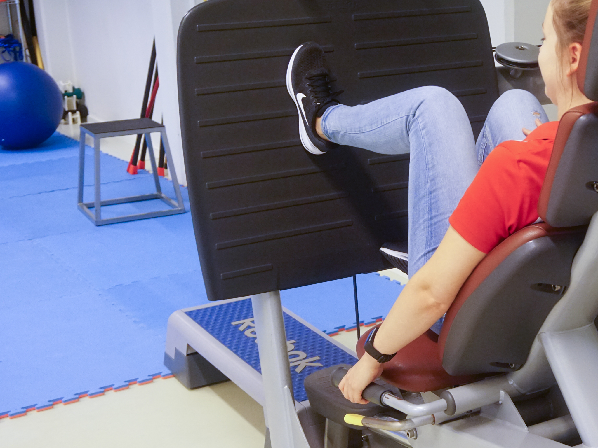

Naast het trainen onder de noemer ‘fysiotherapie’, wordt er bij De Merk ook getraind onder de noemer ‘medische fitness’. Medische fitness is het in groepsverband trainen met een persoonlijke (medische) begeleiding. Dit doen we in de moderne en ruim ingerichte oefenzaal, met moderne apparatuur, kleedruimtes met douchegelegenheid. Dit alles is opgezet met als doel plezier te hebben in bewegen maar toch deskundig begeleidt te kunnen worden. Doordat we over vele verschillende fysiotherapeuten beschikken op De Merk, hebben we passende begeleiding voor jong en oud.
Medische fitness onderscheidt zich van fitness in de sportschool doordat er bij medische fitness altijd een fysiotherapeut aanwezig is in de oefenzaal. De fysiotherapeut kan bijvoorbeeld ex-hartpatiënten blijven begeleiden met passende trainingsadviezen of mensen met terugkerende rugklachten helpen een passende training te blijven uitvoeren. Medische fitness is hierdoor duurder dan fitness in de sportschool. De prijzen zijn evenwel aantrekkelijk en marktconform. Wanneer u zelf de kosten draagt krijgt u voor 102,50 Euro een knipkaart van 12 keer. Bij een medische indicatie en een passende verzekering bestaat de mogelijkheid dat uw zorgverzekeraar (een deel van) de kosten draagt. Deze mogelijkheden bespreken we graag met u.
Ik ben 75 jaar, ga 1 keer per week naar medische fitness, door de vakkundige begeleiding van mijn therapeute krijg ik oefeningen die mijn spieren en pezen sterk maken, daardoor heb ik geen pijnstilling meer nodig, heb ik lang gebruikt voor rug en heup problemen, ik ben hier ontzettend blij mee, ik zou het niet weer willen missen, en het luisterend oor is ook heel belangrijk, je kan altijd je zorg delen, dat is heel fijn! (mevrouw Meesters)
In de winterperiode biedt De Merk (medische) fitness aan onder fysiotherapeutische begeleiding op verschillende dagen in de week. In de zomer zijn er ook mogelijkheden, zij het beperkter omdat de ervaring leert dat vele mensen zich dan ook in de buitenlucht passend vermaken.